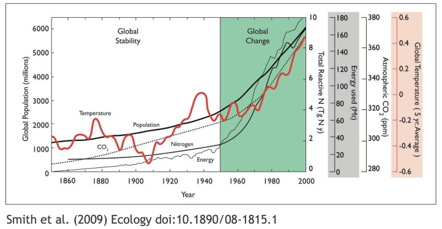
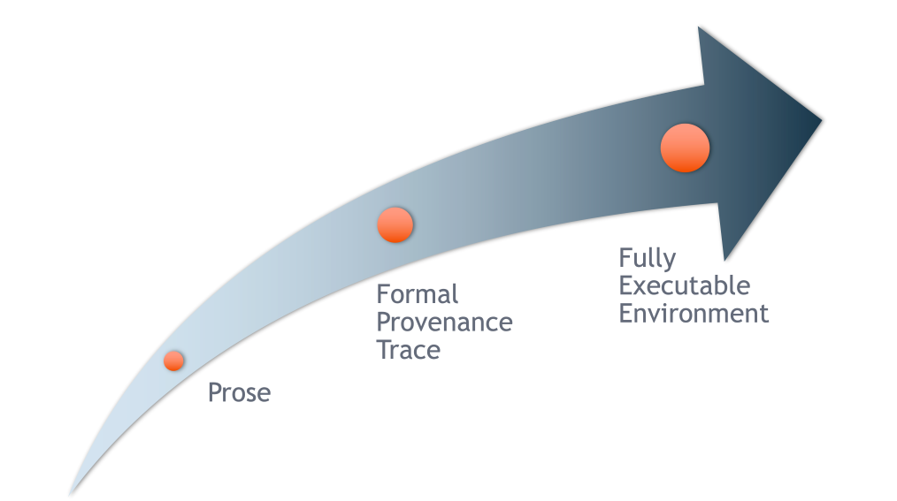
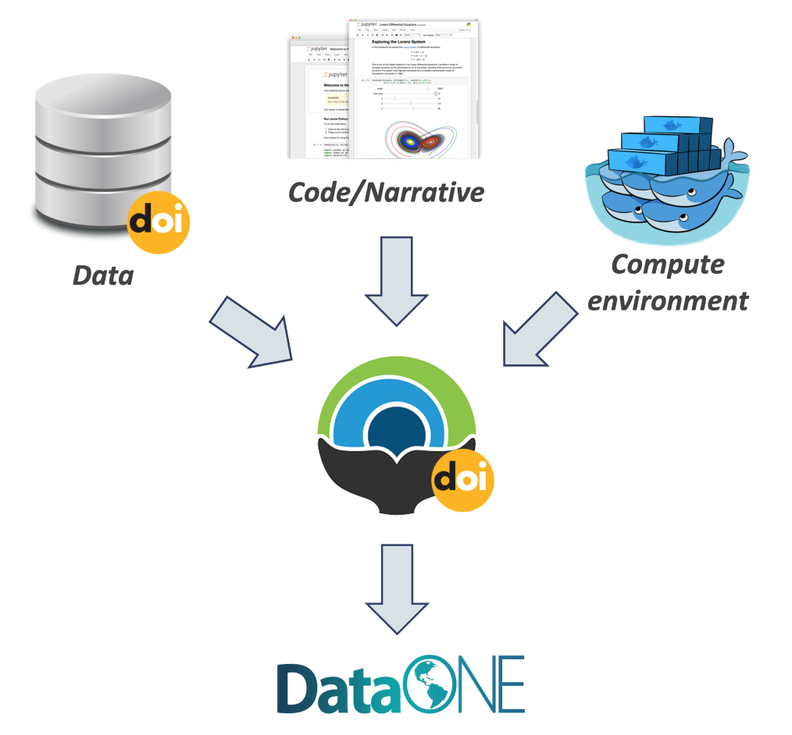

- Introduce the concept of reproducibility
- Understand reproducibility best practices: File system structure, file organization, robust file paths
- Discuss the concept of reproducible workflows including computational reproducibility and provenance metadata
- Learn how to use R to package your work by building a reproducible paper in RMarkdown/Quarto
- Introduce tools and techniques for reproducibility supported by the NCEAS and DataONE

1 Slides
2 More on Reproducible Workflows
- Best Practices for Writing Reproducible Code, University of Utrecht
- A Guide to Reproducible Code in Ecology and Evolution, British Ecological Society
- Reproducibility Lesson, LTER Synthesis Skills for Early Career Researchers
- EDS 221 (2023), Lesson 1 and Lesson 2, UCSB MEDS, By Allison Horst
- GitHub Clinic, Openscapes
- Building reproducible analytical pipelines with R, Bruno Rodrigues
In this lesson, we will be leveraging RMarkdown instead of Quarto so that we can use a very cool R package called rticles. Quarto has the same functionality as RMarkdown with rticles - making journal formatted articles from a code notebook - but it is done from the command line without additional R packages. See the Quarto documentation for details
3 Reproducible Research: Recap
Working in a reproducible manner:
- Increases research efficiency, accelerating the pace of your research and collaborations.
- Provides transparency by capturing and communicating scientific workflows.
- Enables research to stand on the shoulders of giants (build on work that came before).
- Allows credit for secondary usage and supports easy attribution.
- Increases trust in science.
To enable others to fully interpret, reproduce or build upon our research, we need to provide more comprehensive information than is typically included in a figure or publication. The methods sections of papers are typically inadequate to fully reproduce the work described in the paper.

For example, the figure above conveys multiple messages. But, by looking at the figure we don’t get the full story of the process the scientist used to make this plot. What data were used in this study? What methods were applied? What were the parameter settings? What documentation or code are available to us to evaluate the results? Can we trust these data and methods? Are the results reproducible?
Computational reproducibility is the ability to document data, analyses, and models sufficiently for other researchers to be able to understand and ideally re-execute the computations that led to scientific results and conclusions.
Practically speaking, reproducibility includes:
- Preserving the data
- Preserving the software workflow
- Documenting what you did
- Describing how to interpret it all
A recent study of publicly-available datasets in the Harvard Database repository containing R files found that only 26% of R files ran without error in the initial execution. 44% were able to be run after code cleaning, showing the importance of good programming practice [@trisovic2022]. The figure below from Trisovic et al. shows a sankey diagram of how code cleaning was able to fix common errors.

4 Computational Provenance and Workflows
Computational provenance refers to the origin and processing history of data including:
- Input data
- Workflow/scripts
- Output data
- Figures
- Methods, dataflow, and dependencies
When we put these all together with formal documentation, we create a computational workflow that captures all of the steps from initial data cleaning and integration, through analysis, modeling, and visualization. In other words, computational provenance is a formalized description of a workflow from the origin of the data to its final outcome.
Here’s an example of a computational workflow from Mark Carls: Mark Carls. Analysis of hydrocarbons following the Exxon Valdez oil spill, Gulf of Alaska, 1989 - 2014. Gulf of Alaska Data Portal. urn:uuid:3249ada0-afe3-4dd6-875e-0f7928a4c171., that represents a three step workflow comprising four source data files and two output visualizations.


This image is a screenshot of an interactive user interface of a workflow built by DataONE. You can clearly see which data files were inputs to the process, the scripts that are used to process and visualize the data, and the final output objects that are produced, in this case two graphical maps of Prince William Sound in Alaska.
5 From Provenance to Reproducibility

DataONE provides a tool to track and visualize provenance. It facilitates reproducible science through provenance by:
- Tracking data derivation history
- Tracking data inputs and outputs of analyses
- Preserving and documenting software workflows
- Tracking analysis and model executions
- Linking all of these to publications
One way to illustrate this is to look into the structure of a data package. A data package is the unit of publication of your data, including datasets, metadata, software and provenance. The image below represents a data package and all its components and how these components relate to one another.

6 Data Citation and Transitive Credit
We want to move towards a model such that when a user cites a research publication we will also know:
- Which data produced it
- What software produced it
- What was derived from it
- Who to credit down the attribution stack

This is transitive credit. And it changes the way in which we think about science communication and traditional publications.
7 Reproducible Papers with rrtools
A great overview of this approach to reproducible papers comes from:
Ben Marwick, Carl Boettiger & Lincoln Mullen (2018) Packaging Data Analytical Work Reproducibly Using R (and Friends), The American Statistician, 72:1, 80-88, doi:10.1080/00031305.2017.1375986
The key idea in Marwick et al. (2018) is that of the research compendium: A single container for not just the journal article associated with your research but also the underlying analysis, data, and even the required software environment required to reproduce your work.
Research compendium makes it easy for researchers to do their work but also for others to inspect or even reproduce the work because all necessary materials are readily at hand due to being kept in one place. Rather than a constrained set of rules, the research compendium is a scaffold upon which to conduct reproducible research using open science tools such as:
Fortunately for us, Ben Marwick (and others) have written an R package called rrtools that helps us create a research compendium from scratch.
To start a reproducible paper with rrtools:
Close your
username-trainingproject. Go to the project switcher dropdown, just click “close project.” This will set your working directory back to your home directory.In console run the following line of code
## "mypaper" is the name of the Rproj with my research compendia
rrtools::use_compendium("mypaper")rrtools has created the beginnings of a research compendium for us. The structure of this compendium is similar to the one needed to built an R package. That’s because it uses the same underlying folder structure and metadata and therefore it technically is an R package (called mypaper). And this means our research compendium could be easy to install in someone elses’ computer, similar to an R package.
rrtoolsalso helps you set up some key information:
- Set up a README file in the RMarkdown format
- Create an
analysisfolder to hold our reproducible paper
rrtools::use_readme_rmd()
rrtools::use_analysis()This creates a standard, predictable layout for our code and data and outputs that multiple people can understand. At this point, we’re technically ready to start writing the paper. But.. What about GitHub?
7.1 Creating a git and GitHub repository with usethis
usethisis a package that facilitates interactive workflows for R project creation and development. It automates repetitive tasks that arise during project setup and development.
We are going to use two functions to start tracking our work in git, create a remote repository in GitHub and be able to push and pull between the local version and the remote. To learn more about this package checkout the package documentation.
Make sure your are in “mypaper” Rproj.
In the Console run
usethis::use_git()to create a local git repo. Choose yes to both questions when prompted (to commit files, and to restart R).Then, in the Console, run
usethis::use_github()to create an upstream remote repo (in GitHub).
And that’s it! Now your have your research compendium in your local computer and your changes are being tracked by git and your can pull and push to GitHub.
Let’s explore the structure rrtools has put in place for us. Inside the analysis folder we have 5 folders. Different parts of our project will go into this different folders. Our data into the data folder, when the time comes to save any figure, we should save them into the figures folder, and so on.

You’ll notice a analysis/templates directory that contains journal citation style language (CSL) files which set the style of citations and reference list for the journal (the Journal of Archaeological Science, in this example). The template.Rmd renders into the template.docx. This document is called in the paper.qmd YAML to style the output of the paper created in paper.qmd.
What if I want a template from another journal, different from the Journal of Archeological Science? We can create other journal’s template with the rticles package. This package will provide the templates and necessary information to render your paper in the journal of your choice (note: not all journal are in the rticles package). With that in mind, we will delete the existing paper directory and create a new one shortly.
8 RMarkdown templates with rticles
The rticles package provides a lot of other great templates for formatting your paper specifically to the requirements of many journals. In addition to a custom CSL file for reference customization, rticles supports custom LATeX templates that fit the formatting requirements of each journals.
To be able to render your document to PDF you need to have tinytex installed in your machine.
In the console run:
install.packages('tinytex') ## this package is already installed in our server
tinytex::install_tinytex() ## this may take several minutesIf you do not have
rticleinstalled, go ahead and install calling the following function in the console:install.packages('rticles')Restart your RStudio session.To create a new file from
rticlescustom templates, got toFile | New File | R Markdown...menu, which shows the following dialog:

Go to “From Template” in the left side menu.
Select the “PNAS” template, give the file a name and set the location of the files to be
mypaper/analysis, and click “OK”.You can now Knit the Rmd file to see a highly-targeted article format, like this one for PNAS:

9 Workflow in a nutshell
- Use
rrtoolsto generate the core directory layout and approach to data handling. - Then use
rticlesto create the structure of the paper itself. The combination is incredibly flexible.
Things we can do with our research compendium:
- Edit
./analysis/paper/paper.Rmdto begin writing your paper and your analysis in the same document - Add any citations to
./analysis/paper/pnas-sample.bib - Add any longer R scripts that don’t fit in your paper in an
Rfolder at the top level - Add raw data to
./data/raw_data - Write out any derived data (generated in
paper.Rmd) to./data/derived_data - Write out any figures in
./analysis/figures
You can then write all of your R code in your RMarkdown/Quarto, and generate your manuscript all in the format needed for your journal (using its .csl file, stored in the paper directory).
10 Adding renv to conserve your environment
rrtoolshas a couple more tricks up its sleeve to help your compendium be as reproducible and portable as possible.To capture the R packages and versions this project depends on, we can use the
renvpackage.Running
renv::init(), will initiate tracking of the R packages in your project.This action will create a new folder called
renvin your top directory.renv::init()automatically detects dependencies in your code (by looking for library calls, at the DESCRIPTION file, etc.) and installs them to a private project specific library. This means that your projectmypapercan use a different version ofdplyrthan another project which may need an older version without any hassle.renvalso write the package dependencies to a special file in the repository calledrenv.lock.If any of your packages you are using is updated, while your are working on your project, you can run
renv::snapshot()to update therenv.lockfile and your project-installed packages.You can read the
renv.lockfile usingrenv::restore(), when needed. This will install the versions of the packages needed.
11 Conserve your computational environement with Docker
- The
rrtoolspackage then uses thisrenv.lockfile to build what is called a Dockerfile. - Docker allows you to build containers, a standard unit of software that packages up code and all its dependencies so an application runs quickly and reliably from one computing environment to another.
- A container is an “image” of all the software specified, and this image can be run on other computers such that the software stack looks exactly as you specify.
- This is important when it comes to reproducibility, because when running someone else code, you may get different results or errors if you are using different versions of software (like an old version of
dplyr). - A Dockerfile contains the instructions for how to recreate the computational environment where your analysis was run.
In practice
Once you have your research compendium, you can called
rrtools::use_dockerfile(). If needed, re-installrrtoolsdirectly from GitHubremotes::install_github("benmarwick/rrtools")This first creates a Dockerfile that loads a standard image for using R with the tidyverse.
And then has more instructions for how to create the environment so that it has the very specific R packages and versions you need.
If we look at the Dockerfile (example below), it calls to
renv::restore(), as described above.The last line of the docker file renders our Quarto/RMarkdown reproducible paper!
# get the base image, the rocker/verse has R, RStudio and pandoc
FROM rocker/verse:4.2.2
# required
MAINTAINER Your Name <your_email@somewhere.com>
COPY . /<REPO>
# go into the repo directory
RUN . /etc/environment \
# Install linux depedendencies here
# e.g. need this for ggforce::geom_sina
&& sudo apt-get update \
&& sudo apt-get install libudunits2-dev -y \
# build this compendium package
&& R -e "install.packages('remotes', repos = c(CRAN = 'https://cloud.r-project.org'))" \
&& R -e "remotes::install_github(c('rstudio/renv', 'quarto-dev/quarto-r'))" \
# install pkgs we need
&& R -e "renv::restore()" \
# render the manuscript into a docx, you'll need to edit this if you've
# customised the location and name of your main qmd file
&& R -e "quarto::quarto_render('/<REPO>/analysis/paper/paper.qmd')"- After running
rrtools::use_dockerfile(), the package also sets up GitHub Actions for you. - Actions are processes that are triggered in GitHub events (like a push) and run automatically.
- In this case, the Action that is set up will build your Docker image on GitHub.
- This means that the code that knits your paper is run, and an updated version of your paper is knit.
- This is called continuous integration, and is extremely convenient for developing products like this, since the build step can be taken care of automatically as you push to your repository.

12 The 5th Generation of Reproducible Papers

Whole Tale is a project that aims to simplify computational reproducibility. It enables researchers to easily package and share ‘Tales’. Tales are executable research objects captured in a standards-based tale format complete with metadata. They can contain:
- Data (references)
- Code (computational methods)
- Narrative (traditional science story)
- Compute environment (e.g. RStudio, Jupyter)

By combining data, code and the compute environment, Tales allow researchers to:
- Re-create the computational results from a scientific study
- Achieve computational reproducibility
- “Set the default to reproducible.”
Full circle reproducibility can be achieved by publishing data, code AND the computational environment.